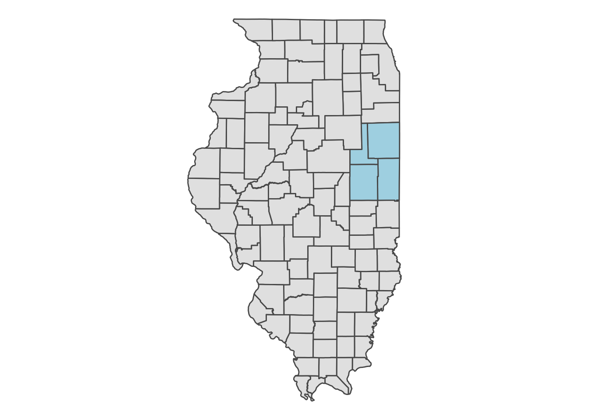
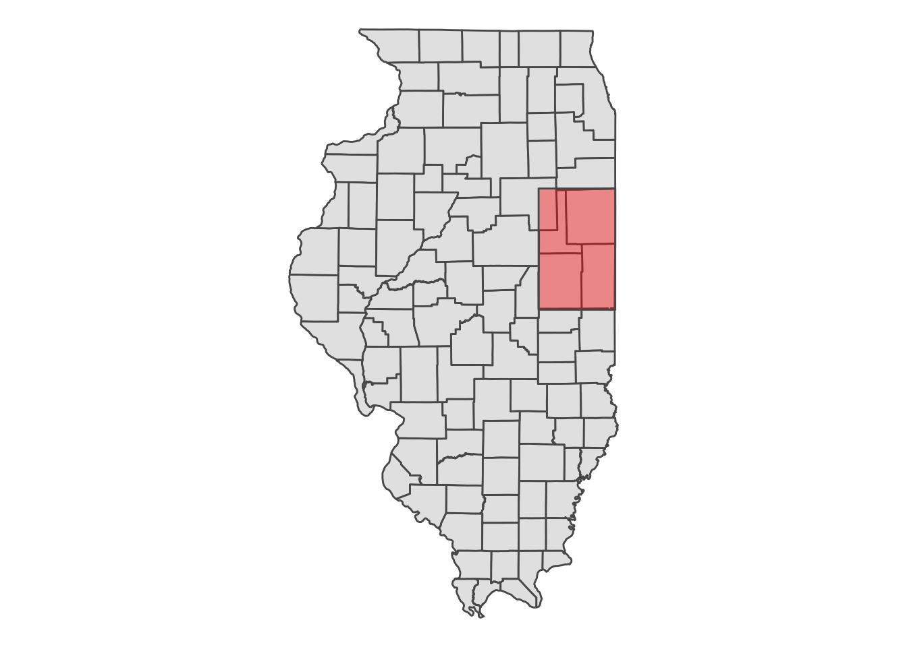
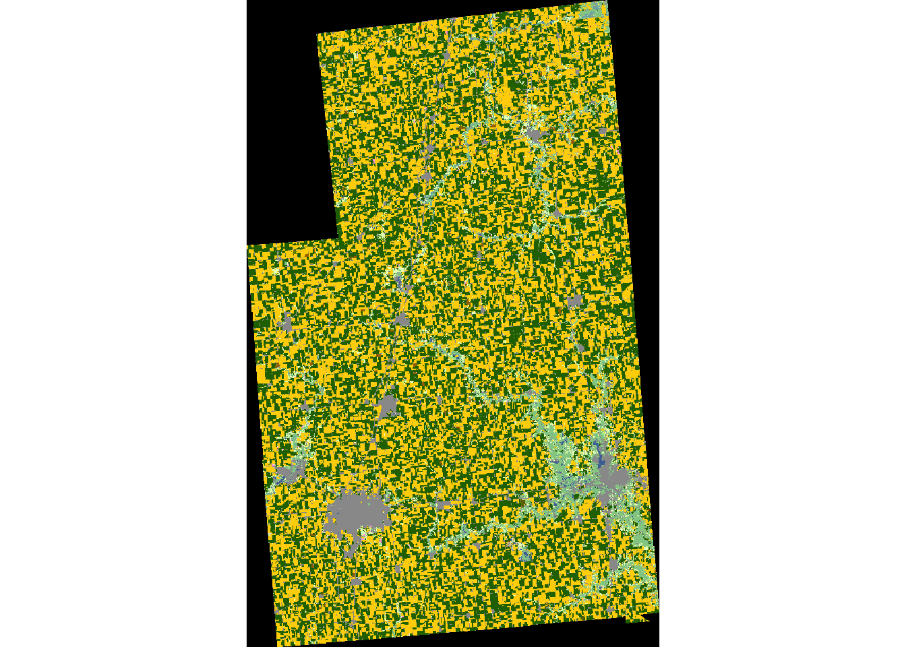
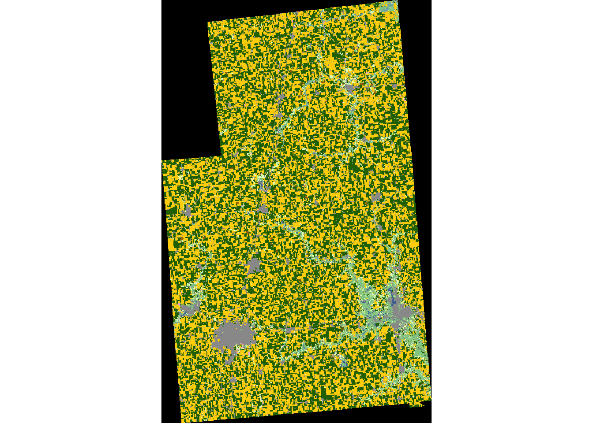
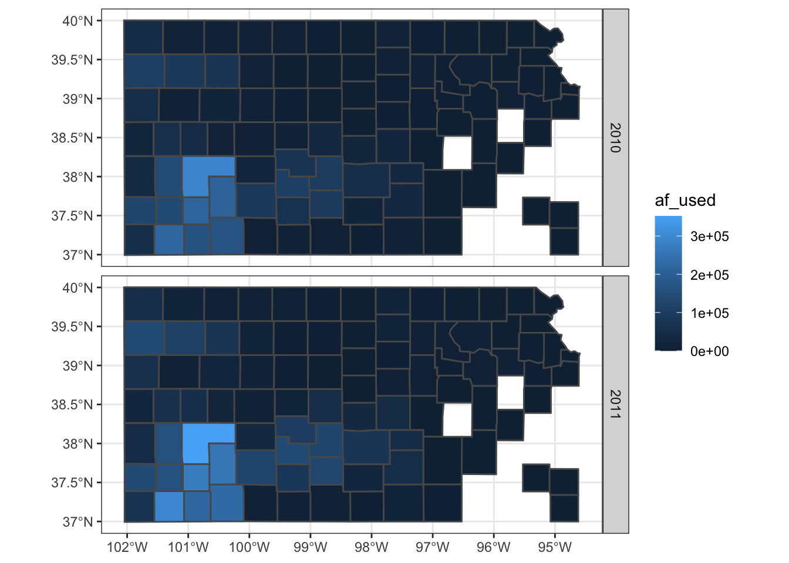

9.2 CDL with CropScapeR
The Cropland Data Layer (CDL) is a data product produced by the National Agricultural Statistics Service of U.S. Department of Agriculture. CDL provides geo-referenced, high accuracy, 30 (after 2007) or 56 (in 2006 and 2007) meter resolution, crop-specific cropland land cover information for up to 48 contiguous states in the U.S. from 1997 to the present. This data product has been extensively used in agricultural research. CropScape is an interactive Web CDL exploring system (https://nassgeodata.gmu.edu/CropScape/), and it was developed to query, visualize, disseminate, and analyze CDL data geospatially through standard geospatial web services in a publicly accessible on-line environment (Han et al., 2012).
This section shows how to use the CropScapeR package (Chen 2020) to download and explore the CDL data. The package implements some of the most useful geospatial processing services provided by the CropScape, and it allows users to efficiently process the CDL data within the R environment. Specifically, the CropScapeR package provides four functions that implement different kinds of geospatial processing services provided by the CropScape. This section introduces these functions while providing some examples. GetCDLData() in particular is the most important function as it lets you download the raw CDL data. The other functions provide the users with the CDL data summarized or transformed in particular manners that may suit the need of some users.
Note: There is a known problem with Mac users requesting CDL data services using the CropScape API, which causes errors when using the functions provided by the package. Please see section 9.2.4 for a workaround.
The CropScapeR package can be installed directly from ‘CRAN’:
install.packages("CropScapeR")The development version of the package can be downloaded from its GitHub website using the following codes:
library(devtools)
devtools::install_github("cbw1243/CropScapeR") Let’s load the package.
library(CropScapeR) Acknowledgment: The development of the CropScapeR package was supported by USDA-NRCS Agreement No. NR193A750016C001 through the Cooperative Ecosystem Studies Units network. Any opinions, findings, conclusions, or recommendations expressed are those of the author(s) and do not necessarily reflect the view of the U.S. Department of Agriculture.
9.2.1 GetCDLData: Download the CDL data as raster data
GetCDLData() allows us to obtain CDL data for any Area of Interest (AOI) in a given year. It requires three parameters to make a valid data request:
aoi: Area of Interest (AOI).
year: Year of the data to request.
type: Type of AOI.
The following AOI-type combinations are accepted:
- any spatial object as an
sforsfcobject -type = "b" - county (defined by a 5-digit county FIPS code) -
type = "f" - state (defined by a 2-digit state FIPS code) -
type = "f" - bounding box (defined by four corner points) -
type = "b" - polygon area (defined by at least three coordinates) -
type = "ps" - single point (defined by a coordinate) -
type = "p"
This section discusses how to download data for an sf object, county, and state as they are likely to be the most common AOI. See the package github site (https://github.com/cbw1243/CropScapeR) to see how the other options work.
9.2.1.1 Downloading CDL data for sf, county, and state
Downloading CDL data for sf
Let’s download the 2018 CDL data for the area that covers Champaign, Vermilion, Ford, and Iroquois Counties in Illinois (a map below).
#--- get the sf for the four counties ---#
IL_4_county <- tigris::counties(state = "IL", cb = TRUE) %>%
st_as_sf() %>%
filter(NAME %in% c("Champaign", "Vermilion", "Ford", "Iroquois")) ggplot() +
geom_sf(data = IL_county) +
geom_sf(data = IL_county_4, fill = "lightblue") +
theme_void()
When you use an sf object for aoi, CDL data will be downloaded for the bounding box (this is why type = "b") that encompasses the entire geographic area of the sf object irrespective of the type of objects in the sf object (whether they are points, polygons, lines). In this case, CDL data is downloaded for the red area in the map below.
ggplot() +
geom_sf(data = IL_county) +
geom_sf(data = st_as_sfc(st_bbox(IL_county_4)), fill = "red", alpha = 0.4) +
theme_void() 
Let’s download CDL data for the four counties:
(
cdl_IL_4 <- GetCDLData(
aoi = IL_county_4,
year = "2018",
type = "b"
)
)class : RasterLayer
dimensions : 4431, 2826, 12522006 (nrow, ncol, ncell)
resolution : 30, 30 (x, y)
extent : 631935, 716715, 1898745, 2031675 (xmin, xmax, ymin, ymax)
crs : +proj=aea +lat_0=23 +lon_0=-96 +lat_1=29.5 +lat_2=45.5 +x_0=0 +y_0=0 +datum=NAD83 +units=m +no_defs
source : IL4.tif
names : IL4
values : 0, 255 (min, max)As you can see, the downloaded data is a RasterLayer object92. Note that the CDL data uses the Albers equal-area conic projection.
terra::crs(cdl_IL_4) CRS arguments:
+proj=aea +lat_0=23 +lon_0=-96 +lat_1=29.5 +lat_2=45.5 +x_0=0 +y_0=0
+datum=NAD83 +units=m +no_defs Take a look at the downloaded CDL data.
plot(cdl_IL_4)

If you do not want to have values outside of the sf object, you can use raster::mask() to turn them into NA as follows:
cdl_IL_4_masked <- IL_county_4 %>%
#--- change the CRS first to that of the raster data ---#
st_transform(., projection(cdl_IL_4)) %>%
#--- mask the values outside the sf (turn them into NA) ---#
raster::mask(cdl_IL_4, .) As you can see below, values outside the four counties are now NA (black area):
plot(cdl_IL_4_masked) 

Downloading CDL data for county
The following code makes a request to download the CDL data for Champaign county in Illinois in 2018.
(
cdl_Champaign <- GetCDLData(aoi = 17019, year = 2018, type = 'f')
)class : RasterLayer
dimensions : 2060, 1626, 3349560 (nrow, ncol, ncell)
resolution : 30, 30 (x, y)
extent : 633825, 682605, 1898745, 1960545 (xmin, xmax, ymin, ymax)
crs : +proj=aea +lat_0=23 +lon_0=-96 +lat_1=29.5 +lat_2=45.5 +x_0=0 +y_0=0 +datum=NAD83 +units=m +no_defs
source : ch.tif
names : ch
values : 0, 255 (min, max)In the above code, the FIPS code for Champaign County (17019) was supplied to the aoi option. Because a county is used here, the type argument is specified as ‘f.’
plot(cdl_Champaign) 
Downloading CDL data for state
The following code makes a request to download the CDL data for the state of Illinois in 2018.
(
cdl_IL <- GetCDLData(aoi = 17, year = 2018, type = 'f')
)In the above code, the state FIPS code for Illinois (\(17\)) was supplied to the aoi option. Because a county is used here, the type argument is specified as ‘f.’
plot(cdl_IL) 
9.2.1.2 Other format options
GeoTiff
You could save the downloaded CDL data as a tif file by adding save_path = option to GetCDLData() as follows:
(
cdl_IL_4 <- GetCDLData(
aoi = IL_county_4,
year = "2018",
type = "b",
save_path = "/Data/IL_4.tif"
)
)With this code, the downloaded data will be saved as “IL_4.tif” in the “Data” folder residing in the current working directory.
sf
The GetCDLData function lets you download CDL data as an sf of points, where the coordinates of the points are the coordinates of the centroid of the raster cells. This can be done by adding format = sf as an option.
(
cdl_sf <- GetCDLData(aoi = 17019, year = 2018, type = 'f', format = "sf")
)The first column (value) is the crop code. Of course, you can manually convert a RasterLayer to an sf of points as follows:
as.data.frame(cdl_Champaign, xy = TRUE) %>%
#--- to sf consisting of points ---#
st_as_sf(coords = c("x", "y")) %>%
#--- Albert conic projection ---#
st_set_crs("+proj=aea +lat_1=29.5 +lat_2=45.5 +lat_0=23 +lon_0=-96 +x_0=0 +y_0=0 +ellps=GRS80 +towgs84=0,0,0,0,0,0,0 +units=m +no_defs") Simple feature collection with 3349560 features and 1 field
geometry type: POINT
dimension: XY
bbox: xmin: 633840 ymin: 1898760 xmax: 682590 ymax: 1960530
CRS: +proj=aea +lat_1=29.5 +lat_2=45.5 +lat_0=23 +lon_0=-96 +x_0=0 +y_0=0 +ellps=GRS80 +towgs84=0,0,0,0,0,0,0 +units=m +no_defs
First 10 features:
ch geometry
1 0 POINT (633840 1960530)
2 0 POINT (633870 1960530)
3 0 POINT (633900 1960530)
4 0 POINT (633930 1960530)
5 0 POINT (633960 1960530)
6 0 POINT (633990 1960530)
7 0 POINT (634020 1960530)
8 0 POINT (634050 1960530)
9 0 POINT (634080 1960530)
10 0 POINT (634110 1960530)The format = sf option makes GetCDLData() do this conversion internally for those who want CDL data as an sf consisting of points instead of a RasterLayer.
9.2.2 Data processing after downloading data
The downloaded raster data itself is not readily usable immediately for your economic analysis. Typically the variable of interest is the frequency of land use types or their shares. You can use raster::freq() to get the frequency (the number of raster cells) of each land use type.
(
crop_freq <- freq(cdl_Champaign)
) value count
[1,] 0 476477
[2,] 1 1211343
[3,] 4 15
[4,] 5 1173150
[5,] 23 8
[6,] 24 8869
[7,] 26 1168
[8,] 27 34
[9,] 28 52
[10,] 36 4418
[11,] 37 6804
[12,] 43 2
[13,] 59 1064
[14,] 60 79
[15,] 61 54
[16,] 111 6112
[17,] 121 111191
[18,] 122 155744
[19,] 123 38898
[20,] 124 12232
[21,] 131 1333
[22,] 141 49012
[23,] 142 15
[24,] 143 7
[25,] 152 77
[26,] 176 84463
[27,] 190 6545
[28,] 195 339
[29,] 222 1
[30,] 229 16
[31,] 241 38Clearly, once frequencies are found, you can easily get shares as well:
(
crop_data <-crop_freq %>%
#--- matrix to data.frame ---#
data.frame(.) %>%
#--- find share ---#
mutate(share = count/sum(count))
) value count share
1 0 476477 1.422506e-01
2 1 1211343 3.616424e-01
3 4 15 4.478200e-06
4 5 1173150 3.502400e-01
5 23 8 2.388373e-06
6 24 8869 2.647810e-03
7 26 1168 3.487025e-04
8 27 34 1.015059e-05
9 28 52 1.552443e-05
10 36 4418 1.318979e-03
11 37 6804 2.031312e-03
12 43 2 5.970933e-07
13 59 1064 3.176537e-04
14 60 79 2.358519e-05
15 61 54 1.612152e-05
16 111 6112 1.824717e-03
17 121 111191 3.319570e-02
18 122 155744 4.649685e-02
19 123 38898 1.161287e-02
20 124 12232 3.651823e-03
21 131 1333 3.979627e-04
22 141 49012 1.463237e-02
23 142 15 4.478200e-06
24 143 7 2.089827e-06
25 152 77 2.298809e-05
26 176 84463 2.521615e-02
27 190 6545 1.953988e-03
28 195 339 1.012073e-04
29 222 1 2.985467e-07
30 229 16 4.776747e-06
31 241 38 1.134477e-05At this point, the data does not tell you which value corresponds to which crop. To find the crop names associated with the crop codes (value), you can get the reference table using data(linkdata) from the CropScapeR package.93
#--- load the crop code reference data ---#
data("linkdata")You can merge the two data sets using value from the CDL data and MasterCat from linkdata as the merging keys:
(
crop_data <- dplyr::left_join(crop_data, linkdata, by = c('value' = 'MasterCat'))
) value count share Crop
1 0 476477 1.422506e-01 NoData
2 1 1211343 3.616424e-01 Corn
3 4 15 4.478200e-06 Sorghum
4 5 1173150 3.502400e-01 Soybeans
5 23 8 2.388373e-06 Spring_Wheat
6 24 8869 2.647810e-03 Winter_Wheat
7 26 1168 3.487025e-04 Dbl_Crop_WinWht/Soybeans
8 27 34 1.015059e-05 Rye
9 28 52 1.552443e-05 Oats
10 36 4418 1.318979e-03 Alfalfa
11 37 6804 2.031312e-03 Other_Hay/Non_Alfalfa
12 43 2 5.970933e-07 Potatoes
13 59 1064 3.176537e-04 Sod/Grass_Seed
14 60 79 2.358519e-05 Switchgrass
15 61 54 1.612152e-05 Fallow/Idle_Cropland
16 111 6112 1.824717e-03 Open_Water
17 121 111191 3.319570e-02 Developed/Open_Space
18 122 155744 4.649685e-02 Developed/Low_Intensity
19 123 38898 1.161287e-02 Developed/Med_Intensity
20 124 12232 3.651823e-03 Developed/High_Intensity
21 131 1333 3.979627e-04 Barren
22 141 49012 1.463237e-02 Deciduous_Forest
23 142 15 4.478200e-06 Evergreen_Forest
24 143 7 2.089827e-06 Mixed_Forest
25 152 77 2.298809e-05 Shrubland
26 176 84463 2.521615e-02 Grassland/Pasture
27 190 6545 1.953988e-03 Woody_Wetlands
28 195 339 1.012073e-04 Herbaceous_Wetlands
29 222 1 2.985467e-07 Squash
30 229 16 4.776747e-06 Pumpkins
31 241 38 1.134477e-05 Dbl_Crop_Corn/SoybeansNoData in Crop corresponds to the black area in the above figure, which is the portion of the raster data that does not overlap with the boundary of Champaign County. These points with NoData can be removed by using the filter function.
9.2.3 Other forms of CDL data
Instead of downloading the raw CDL data, CropScape provides an option to download summarized CDL data.
GetCDLComp: request data on land use changesGetCDLStat: get acreage estimates from the CDLGetCDLImage: download the image files of the CDL data
These may come handy if they satisfy your needs because you can skip post-downloading processing steps.
GetCDLComp(): request data on land use changes
The GetCDLComp function allows users to request data on changes in land cover over time from the CDL. Specifically, this function returns acres changed from one crop category to another crop category between two years for a user-defined AOI.
Let’s see an example. The following codes request data on acreage changes in land cover for Champaign County (FIPS = 17019) from 2017 (year1 = 2017) to 2018 (year2 = 2018).
(
data_change <- GetCDLComp(aoi = '17019', year1 = 2017, year2 = 2018, type = 'f')
) From To Count Acreage aoi
1: Corn Corn 181490 40362.4 17019
2: Corn Sorghum 1 0.2 17019
3: Corn Soybeans 1081442 240506.9 17019
4: Corn Winter Wheat 1950 433.7 17019
5: Corn Dbl Crop WinWht/Soybeans 110 24.5 17019
---
241: Herbaceous Wetlands Herbaceous Wetlands 18 4.0 17019
242: Dbl Crop WinWht/Corn Corn 1 0.2 17019
243: Pumpkins Corn 69 15.3 17019
244: Pumpkins Sorghum 2 0.4 17019
245: Pumpkins Soybeans 62 13.8 17019What is returned is a data.frame (data.table) that has 5 columns. The columns “From” and “To” are crop names. The column “Count” is the pixel count, and “Acreage” is the acres corresponding to the pixel counts. The last column “aoi” is the selected AOI. The first row of the returned data table shows the acreage (i.e., 40,362 acres) of continuous corn during 2017 and 2018. The third row shows the acreage (i.e., 240,506 acres) rotated from corn to soybeans during 2017 and 2018.
Remember that the spatial resolution changes from 56 meters to 30 meters starting 2008. This means that when data is requested for land use changes from 2007 to 2008, two CDL raster layers have different spatial resolutions. Consequently, CropScape API fails to resolve the issue and return an error message saying “Mismatch size of file 1 and file 2.” The GetCDLComp() function manually resolves this problem by resampling two CDL raster files using the nearest neighbor resampling technique such that both rasters have the same spatial resolutions. The finer resolution raster is downscaled to the lower resolution. Then, the resampled raster layers are merged together to calculate cropland changes. Users can turn off this default behavior by adding manual_try = FALSE option. In this case, an error message from CropScape API will be returned with no land use changes results.
data_change <- GetCDLComp(aoi = '17019', year1 = 2007, year2 = 2008, type = 'f', `manual_try` = FALSE) Error in GetCDLCompF(fips = aoi, year1 = year1, year2 = year2, mat = mat, : Error: The requested data might not exist in the CDL database.
Error message from CropScape is :<faultstring>Error: Mismatch size of file 1 and file 2.
</faultstring>GetCDLStat(): get acreage estimates from the CDL
The GetCDLStat function allows users to get acreage by land cover category for a user defined AOI in a year. For example, the following codes request data on acreage by land cover categories for Champaign County in Illinois in 2018. You can see that the pixel counts are already converted to acres and category names are attached.
(
data_stat <- GetCDLStat(aoi = 17019, year = 2018, type = 'f')
) Value Category Acreage
1: 1 Corn 269396.2
2: 4 Sorghum 3.3
3: 5 Soybeans 260902.3
4: 23 Spring Wheat 1.8
5: 24 Winter Wheat 1972.4
6: 26 Dbl Crop WinWht/Soybeans 259.8
7: 27 Rye 7.6
8: 28 Oats 11.6
9: 36 Alfalfa 982.5
10: 37 Other Hay/Non Alfalfa 1513.2
11: 43 Potatoes 0.4
12: 59 Sod/Grass Seed 236.6
13: 60 Switchgrass 17.6
14: 61 Fallow/Idle Cropland 12.0
15: 111 Open Water 1359.3
16: 121 Developed/Open Space 24728.3
17: 122 Developed/Low Intensity 34636.6
18: 123 Developed/Medium Intensity 8650.7
19: 124 Developed/High Intensity 2720.3
20: 131 Barren 296.5
21: 141 Deciduous Forest 10900.0
22: 142 Evergreen Forest 3.3
23: 143 Mixed Forest 1.6
24: 152 Shrubland 17.1
25: 176 Grass/Pasture 18784.1
26: 190 Woody Wetlands 1455.6
27: 195 Herbaceous Wetlands 75.4
28: 222 Squash 0.2
29: 229 Pumpkins 3.6
30: 241 Dbl Crop Corn/Soybeans 8.5
Value Category AcreageGetCDLImage(): Download the image files of the CDL data
The GetCDLImage function allows users to download the image files of the CDL data. This function is very similar to the GetCDLData function, except that image files are returned. This function can be helpful if you only want to look at the picture of the CDL data. By default, the picture is saved as the ‘png’ format. You can also save it in the ‘kml’ format.
GetCDLImage(aoi = 17019, year = 2018, type = 'f', verbose = F)9.2.4 SSL certificate problem on Mac
SSL refers to the Secure Sockets Layer, and SSL certificate displays important information for verifying the owner of a website and encrypting web traffic with SSL/TLS for securing connection. It is a known problem that Mac users encounter the following error when GetCDLData() is used: ‘SSL certificate problem: SSL certificate expired.’ As the name suggests, this is because the CropScape server has an expired certificate. While this affects the Mac users, Windows users should not expect this issue.
To avoid the problem for Mac users, the CropScapeR has a workaround that involves downloading the GeoTiff file for the requested AOI first, and then read the file using the raster() function as a RasterLayer.94
You first need to run the following code before requesting data from CDL.
#--- Skip the SSL check ---#
httr::set_config(httr::config(ssl_verifypeer = 0L)) Now, you can download CDL data by specifying the file path with the save_path option like below:
#--- Download the raster TIF file into specified path, also read into R ---#
data <- GetCDLData(aoi = 17019, year = 2018, type = 'f', save_path = "ch.tif")Hopefully, this problem is fixed by the maintainer of CropScape so that this workaround is not necessary for Mac users.
Alternatively, you can download the reference table (a EXCEL file) at https://www.nass.usda.gov/Research_and_Science/Cropland/docs/cdl_codes_names.xlsx.↩︎
Specifically, at step 1, specify in
Rthat you want to skip the certificate validation when making the httr GET request. At step 2, download the raster TIF data into your local drive using thedownload.filefunction withwget, and then read the downloaded raster file using therasterfunction.↩︎